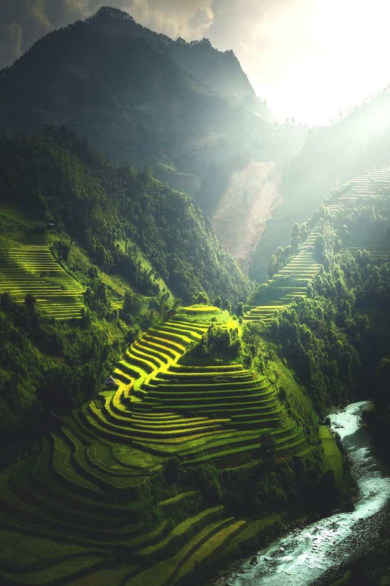
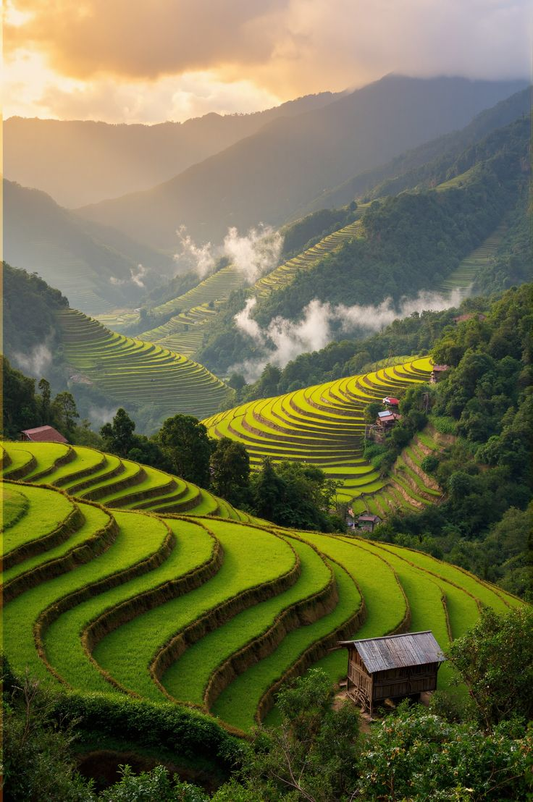
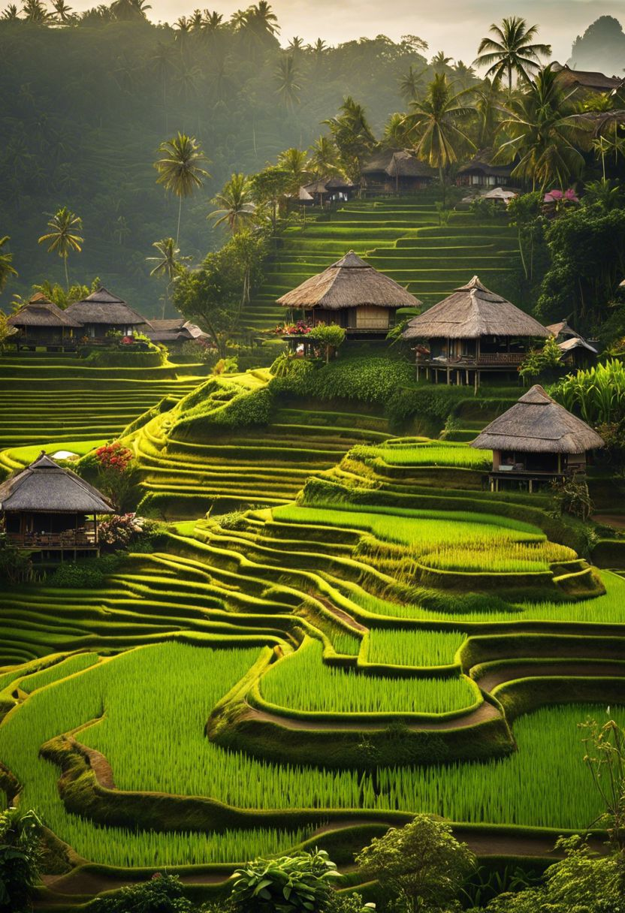
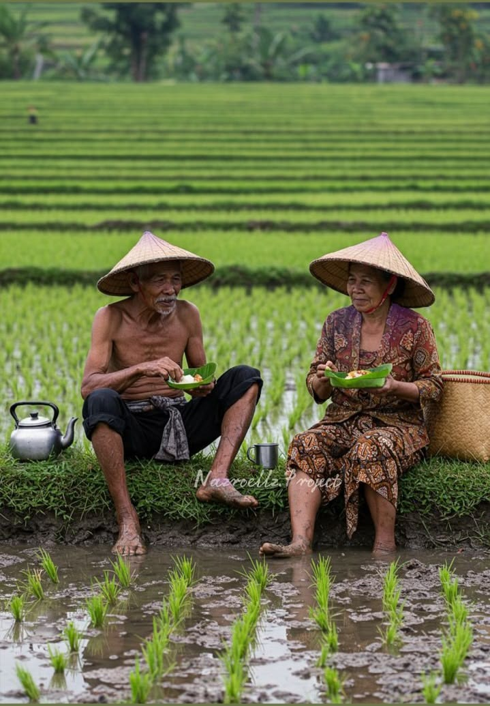

The Banaue Rice Terraces are located in Banaue, Ifugao Province, in the northern Philippines.
The place is famous for its beautiful and ancient rice terraces carved into the mountains.
These terraces were created by the Ifugao people using traditional farming methods passed down through generations.
What makes the Banaue Rice Terraces special is their amazing design, natural beauty, and importance to Ifugao culture and history.
The terraces show the strong relationship between the Ifugao people, their land, and their traditional way of life.
Tourists visit Banaue to enjoy the breathtaking mountain scenery, take photographs, hike, and learn about the culture and traditions
of the Ifugao people. It is a wonderful destination for people who want to experience the beauty, history, and culture of the
Philippine highlands.
TRAVEL GALLERY




ACTIVITIES TO DO
Hiking through the rice terraces - Explore the beautiful mountain paths and terraces.
Taking photographs - Capture the breathtaking landscapes and scenic views.
Visiting local villages - Experience the traditional lifestyle and culture of the Ifugao people.
Learning about Ifugao culture - Discover their traditions, history, farming practices, and craftsmanship.
Enjoying the mountain scenery - Relax and appreciate the natural beauty of the Cordillera highlands.
WHY I WANT TO VISIT
I want to see the beautiful Banaue Rice Terraces and experience their breathtaking scenery.
I want to learn about Ifugao culture and traditions and understand their way of life.
I want to experience hiking through the rice terraces and explore the natural surroundings.
I want to take beautiful photographs of the mountains, terraces, and local communities.
I want to experience the peaceful environment and appreciate the beauty of nature in Banaue.